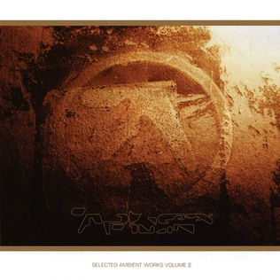
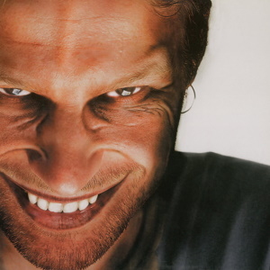
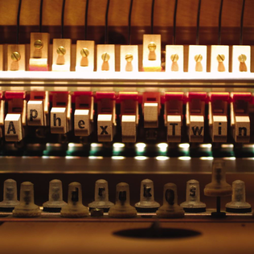
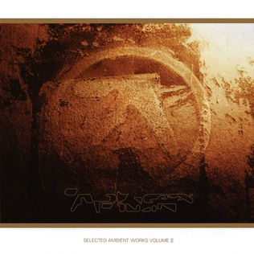
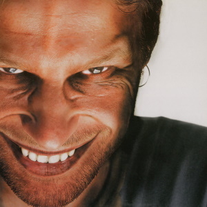
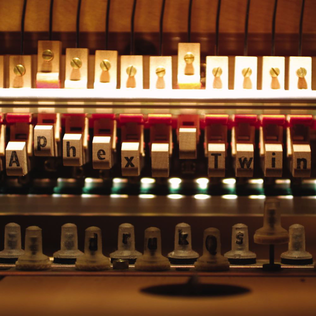

About Aphex Twin
Aphex Twin, otherwise known as Richard D. James, is a groundbreaking electronic artist from Cornwall, England. He is widely regarded as one of the most innovative and influential figures in electronic music.
Starting from humble beginnings, James released his first album under the Aphex Twin name as a ‘best hits’ compilation, which led to confusion among listeners since it was his debut album. However, shortly after its release, it was met with critical acclaim and quickly became cemented in the hallways of iconic cerebral electronic giants like Mort Garson, Autechre, Mu-Ziq, and many more. But James was just getting started.
The next album, Selected Ambient Works Vol. II, aimed to be the opposite of his debut. Instead of syncopated drum machine chaos, SAW II explored the ambience of electronic music, featuring the wistful nature of blooming synths and shuddering drums that felt muffled and less prominent than in his previous work.
In 1996, Aphex Twin released another critically acclaimed album, this one created mostly with digital software, including GarageBand and other computer-based tools. Unsurprisingly, this album was also widely praised for being exploratory and radically different from his earlier work. By this point, James had released four albums that most electronic enthusiasts consider to be some of the best electronic music ever made. Yet, Richard was far from finished.
In 2001, James accidentally left an MP3 player full of unreleased music on a plane, and he quickly assumed the music would be released online unless he did it first. Drukqs became another masterful electronic album, which includes one of his most well-known songs, "Avril 14th"—a solemn piano melody that doesn’t even sound like something he composed due to its calm, grounded nature in contrast to his usual work.
Aphex Twin would go on to release two more full albums: Syro in 2014 and Computer Controlled Acoustic Instruments Pt. 2 in 2015. Syro earned a Grammy for Best Electronic Album, while the latter project captivated music lovers due to its unique nature: every sound and note was created by a programmed robot playing the instrument live. To my knowledge, no one fully understands how James undertook this task, but he did.
Ultimately, Aphex Twin remains a fundamental influence on numerous artists today. For example, C418, the composer of the original Minecraft soundtracks, was heavily inspired by James’ work. If you ever find yourself listening to electronica that sounds too good to be true, chances are Richard’s shadow lies somewhere in the inspiration and creation of that song.
Essential Albums
 




